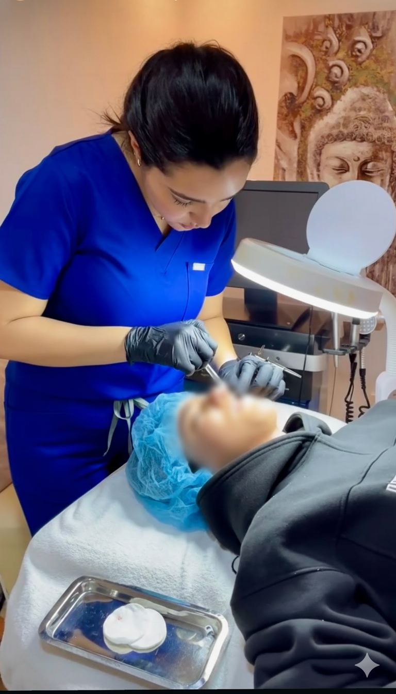
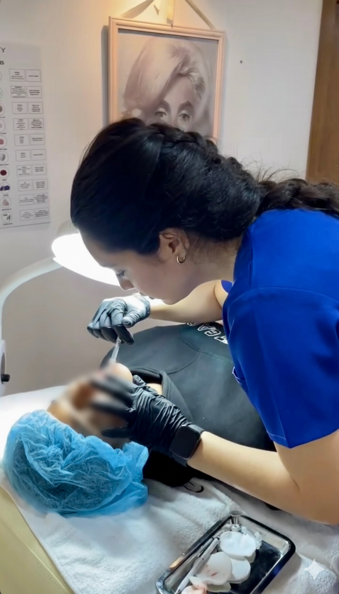

La médecine esthétique vit une véritable transformation à Casablanca. En quelques années, les injections esthétiques à Casablanca sont passées du statut de pratique confidentielle à celui de soin médical réfléchi, accessible et souvent préventif. Front détendu, pommettes relevées, lèvres harmonieuses, peau repulpée : les possibilités sont nombreuses, les techniques précises, et les résultats naturels quand le praticien est qualifié. Ce guide complet vous présente l'ensemble des solutions disponibles en 2026, rédigé et validé par Dr Yousra El Khadri, médecin spécialiste en médecine esthétique, anti-âge et lasers médicaux, installée au cœur du Quartier des Hôpitaux. Qu'il s'agisse de toxine botulique, de fillers à l'acide hyaluronique, de stimulateurs de collagène ou de soins biorégénérateurs, chaque option est expliquée ici avec précision : indications, mécanisme d'action, durée des résultats et profils concernés. L'objectif de ce guide n'est pas de vous convaincre de franchir le pas, mais de vous donner toutes les clés pour prendre une décision éclairée. Parce qu'une consultation médicale réussie commence toujours par une patiente informée.
Qu'est-ce que la médecine esthétique par injections ?
La médecine esthétique par injections regroupe l'ensemble des actes médicaux réalisés par voie cutanée, à l'aide d'aiguilles ou de canules ultra-fines, dans le but d'améliorer l'apparence du visage sans intervention chirurgicale. Ces traitements ne nécessitent ni anesthésie générale, ni bloc opératoire, ni hospitalisation. Ils se déroulent en cabinet médical, en une seule séance de 15 à 45 minutes selon les zones et les produits.
La différence fondamentale avec la chirurgie esthétique tient dans le caractère mini-invasif de ces actes : pas de bistouri, pas de cicatrice, pas de convalescence contraignante. La plupart des patientes reprennent leurs activités le jour même ou le lendemain, sans que leur entourage ne perçoive nécessairement qu'elles viennent d'être traitées.
Ces soins s'adressent à un large spectre de profils : femmes et hommes, de 25 à 65 ans et au-delà, souhaitant corriger des signes visibles de vieillissement, restaurer un volume perdu, améliorer la qualité de leur peau, ou agir de façon préventive avant que les marques du temps ne s'installent durablement. Il n'existe pas de profil type : chaque traitement est conçu sur mesure.
Les grandes familles d'injections esthétiques
La médecine esthétique par injections ne se résume pas au Botox. Il existe en réalité quatre grandes catégories de traitements injectables, chacune avec son mécanisme d'action propre, ses indications spécifiques et sa durée de résultats.
La toxine botulique (Botox)
La toxine botulique est une protéine purifiée qui agit en bloquant temporairement la contraction des muscles dans lesquels elle est injectée. Elle cible les rides dites dynamiques, c'est-à-dire celles qui apparaissent sous l'effet des expressions faciales répétées : les rides horizontales du front, la ride du lion entre les sourcils, les pattes d'oie au coin des yeux. Ses effets durent de 4 à 6 mois. C'est la procédure injectable la plus pratiquée dans le monde et l'une des plus étudiées sur le plan scientifique.
Les fillers à l'acide hyaluronique
Les fillers, ou produits de comblement, utilisent principalement l'acide hyaluronique, une molécule naturellement présente dans la peau. Injectés avec précision, ils restituent le volume perdu, lissent les sillons profonds, repulpent les lèvres et redessinent les contours du visage. Leur durée de vie varie de 6 à 18 mois selon les produits et les zones. L'acide hyaluronique est entièrement résorbable et peut, si nécessaire, être dissous par voie enzymatique, ce qui en fait un produit particulièrement sûr entre des mains expertes.
Les stimulateurs de collagène (Sculptura, Radiesse)
Ces produits n'ont pas pour vocation de combler immédiatement, mais de déclencher une réponse biologique dans la peau : la production naturelle de collagène. Sculptura (acide poly-L-lactique) et Radiesse (hydroxyapatite de calcium) sont les références de cette famille. Leurs effets se développent progressivement sur plusieurs mois et peuvent durer 18 à 24 mois. Ils s'adressent plutôt aux profils ayant perdu en volume et en densité cutanée de façon diffuse.
Les soins biorégénérateurs (Skin Booster, Mésothérapie, Exosomes)
Cette famille regroupe les Skin Boosters, la mésothérapie médicale et les exosomes. Ils n'agissent pas sur les volumes ni directement sur les rides, mais améliorent la qualité intrinsèque de la peau : hydratation profonde, éclat, texture et densité. Ils représentent une solution idéale en protocole d'entretien ou en complément d'autres injections pour sublimer le résultat global.
Le Botox : zones traitées et indications
La toxine botulique agit sur les muscles responsables des rides d'expression. Au cabinet de Dr Yousra El Khadri à Casablanca, les zones les plus fréquemment traitées au Botox sont le front (rides horizontales liées au muscle frontal), la ride du lion (pli vertical entre les sourcils), et les pattes d'oie (rides du coin des yeux qui apparaissent au sourire). Ces trois zones constituent ce que les praticiens appellent le "tiers supérieur" du visage, et sont souvent traitées ensemble lors d'une même séance pour un résultat cohérent et harmonieux.
Pour une analyse complète du botox du front, ses indications, le déroulement d'une séance et la durée des résultats, consultez notre article dédié : Botox du front à Casablanca : zones traitées, prix et durée des effets.
Au-delà des rides d'expression classiques, le Botox traite aussi d'autres indications esthétiques et médicales. L'injection dans le muscle masséter permet d'affiner l'ovale du visage et de soulager le bruxisme (article dédié au Botox masséter à venir prochainement). Il est également utilisé pour traiter la transpiration excessive (hyperhidrose axillaire ou palmaire), le sourire gingival, et le relèvement de la pointe du nez.
Le Botox s'adresse aussi bien à une correction de rides existantes qu'à une approche préventive, de plus en plus plébiscitée entre 25 et 35 ans, avant que les rides dynamiques ne deviennent des rides statiques gravées dans la peau au repos. Consultez la page dédiée aux injections de Botox pour découvrir l'ensemble des zones traitables au cabinet.
Les fillers : redonner volume et harmonie au visage
Avec l'âge, le visage perd progressivement de son volume. Les pommettes s'aplatissent, les joues se creusent, le contour de l'ovale se relâche. Les sillons nasogéniens, ces plis qui encadrent la bouche, se marquent davantage. Les lèvres perdent leur galbe et leur définition. Les fillers à l'acide hyaluronique répondent précisément à ces préoccupations, en apportant un volume contrôlé exactement là où il manque.
Les zones les plus traitées au cabinet de Dr El Khadri sont les lèvres (repulpage, redéfinition du contour, symétrie), les pommettes (restauration du volume et effet liftant naturel), les sillons nasogéniens (atténuation des plis encadrant la bouche), et la vallée des larmes, ou tear trough, pour traiter les cernes creux sous les yeux (article dédié au tear trough à venir prochainement). La jawline, c'est-à-dire la définition de la ligne mandibulaire, représente également une demande croissante, notamment chez les patientes souhaitant redessiner l'ovale du visage sans chirurgie.
La technique des lèvres russes, très recherchée pour son effet vertical et structuré qui allonge et définit les lèvres sans les gonfler excessivement, fait l'objet d'un article dédié (à venir prochainement). En cas de filler mal placé ou de résultat insatisfaisant, l'acide hyaluronique peut être dissous rapidement et efficacement grâce à la hyaluronidase ; un article dédié à la dissolution de filler sera bientôt disponible. Retrouvez également la page dédiée aux fillers à l'acide hyaluronique pour une présentation complète des zones et des protocoles.
Les stimulateurs de collagène à Casablanca
Pour les profils qui ont perdu une densité cutanée significative, ou qui souhaitent un résultat plus durable sans recourir aux fillers classiques, les stimulateurs de collagène représentent une alternative sérieuse. Leur point commun : ils ne comblent pas immédiatement comme un filler, mais déclenchent une cascade biologique qui pousse la peau à produire son propre collagène.
Sculptura (acide poly-L-lactique, Galderma) est injecté en microparticules qui stimulent les fibroblastes sur une période de trois à six mois. Les résultats, progressifs et très naturels, peuvent durer jusqu'à deux ans. Il est particulièrement adapté aux visages ayant perdu du volume global de façon diffuse, souvent dès 40 ans.
Radiesse (hydroxyapatite de calcium, Merz Aesthetics) offre un double effet simultané : un comblement immédiat grâce à sa consistance, et une stimulation du collagène à moyen terme. Il est très efficace sur le visage, les mains, et les zones de relâchement cutané du cou et du décolleté. Des articles dédiés à Sculptura et à Radiesse seront prochainement publiés avec les protocoles complets.
Harmonyca (Galderma) associe acide hyaluronique et hydroxyapatite de calcium dans un seul produit, combinant l'effet de comblement immédiat et l'effet de stimulation collagène dans une seule injection, pour une approche globale et durable.
Comment se déroule une consultation d'injection au cabinet de Dr Yousra El Khadri ?

Chaque consultation au cabinet commence par un temps d'écoute et d'analyse morphologique. Dr El Khadri observe le visage en statique et en dynamique, évalue les volumes, les proportions, les asymétries naturelles et les zones de vieillissement prioritaires. Elle prend le temps de comprendre vos attentes, mais aussi ce que vous souhaitez éviter.
Cette phase d'évaluation est indissociable de la démarche médicale : c'est elle qui permet de proposer un protocole réellement personnalisé, et non un traitement standardisé identique pour toutes. Dr El Khadri ne propose jamais un geste qu'elle ne jugerait pas médicalement fondé, ni ne pratique d'injection lors de la première consultation si elle estime qu'un délai de réflexion est préférable.
Une fois le plan de traitement validé ensemble, un devis personnalisé est établi. Il tient compte des zones traitées, des produits sélectionnés, des dosages adaptés à votre morphologie et de vos attentes précises. Ce devis est toujours remis sans pression et sans délai imposé. Les injections sont ensuite réalisées dans le respect strict des protocoles d'hygiène et de sécurité, avec du matériel à usage unique. La durée d'une séance varie de 15 à 45 minutes. La plupart des patientes reprennent leurs activités le jour même ou dans les 24 heures suivantes.
Sécurité, hygiène et laboratoires partenaires
La sécurité d'une injection repose sur deux piliers indissociables : la compétence du médecin qui réalise l'acte, et la qualité des produits utilisés. Au cabinet de Dr Yousra El Khadri, seuls les produits de laboratoires médicaux certifiés, disposant d'un marquage CE et d'un historique clinique solide, sont injectés.
Galderma (Suisse) est un leader mondial de la dermatologie esthétique, créateur de la gamme Restylane (fillers et skin boosters) et de Sculptura. Quarante ans d'expertise et de données cliniques font de Galderma une référence de confiance incontournable.
Merz Aesthetics (Allemagne, fondé en 1908) est le fabricant de Radiesse, seul filler à base d'hydroxyapatite de calcium disponible sur le marché. Sa longévité et sa traçabilité sont des gages de sérieux reconnus par la communauté médicale internationale.
Norokpharma propose des solutions innovantes en mésothérapie médicale et en régénération cellulaire, dont RRS HA pour la bio-revitalisation profonde et XL Hair pour les soins capillaires aux exosomes.
Ces choix ne sont pas arbitraires : ils reflètent un engagement envers la prévisibilité des résultats, la sécurité des patientes et la traçabilité des produits injectés. Pour consulter la liste complète des laboratoires partenaires du cabinet, visitez la page partenaires du cabinet.
Comment choisir son médecin esthétique à Casablanca ?

Choisir un médecin pour réaliser des injections esthétiques à Casablanca est une décision qui mérite une attention réelle. Le marché s'est développé rapidement et tous les praticiens ne présentent pas les mêmes garanties. Voici les critères qui font la différence.
Les diplômes et la formation continue. La médecine esthétique exige une formation spécialisée et une mise à jour permanente des compétences. Un diplôme universitaire en médecine esthétique (DU), complété par une participation régulière aux grands congrès internationaux comme l'IMCAS à Paris ou l'AMWC à Monaco, est un signe sérieux d'engagement professionnel. Dr Yousra El Khadri se forme régulièrement dans ces cadres scientifiques pour intégrer les dernières avancées techniques à sa pratique. Découvrez son parcours complet sur la page À propos du cabinet.
Un cabinet aux normes. Les injections sont des actes médicaux qui exigent un environnement stérile, du matériel à usage unique et un protocole d'asepsie rigoureux. Ces conditions ne sont pas négociables. Renseignez-vous sur les conditions de réception et d'hygiène avant tout rendez-vous.
Les photos avant/après et les avis patients. Les résultats parlent d'eux-mêmes. Des photos de vraies patientes, publiées sur les réseaux sociaux ou dans la galerie du cabinet, vous donnent un aperçu concret du style du médecin et du niveau d'exigence qu'il s'impose. Privilégiez les résultats naturels aux transformations spectaculaires.
Une consultation sans pression. Un bon médecin esthétique ne vous pousse pas à passer à l'acte lors de la première visite. Il prend le temps d'expliquer, de répondre à vos questions, et respecte votre rythme décisionnel. Si vous ressentez une quelconque pression commerciale, c'est un signal d'alerte.
Foire aux questions sur les injections esthétiques à Casablanca
Prendre rendez-vous au cabinet de Dr Yousra El Khadri
Vous souhaitez en savoir plus sur les injections esthétiques disponibles à Casablanca, ou faire évaluer votre profil lors d'une consultation ? Le cabinet de Dr Yousra El Khadri, situé au Quartier des Hôpitaux, vous accueille sur rendez-vous. Chaque consultation commence par une analyse morphologique complète et un échange sans engagement.
Lundi au vendredi : 9h à 19h · Samedi : 9h à 14h